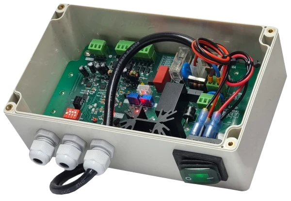

Desarrollo de firmware y software embebido
El hardware pone los sensores. El firmware decide qué hacer con lo que miden, cuándo despertar, a quién avisar y cuánta batería gastar en el intento.

Un equipo que mide bien y aun así no sirve
El sensor entrega el dato correcto, pero nadie lo ve. No llega al sistema que ya usas, o llega en un formato que no entiende. O llega, pero el equipo se quedó sin batería en tres semanas porque transmite cada cinco minutos algo que cambia cada seis horas.
Esos no son problemas de hardware. Son decisiones de firmware: cada cuánto despertar, qué guardar cuando se cae el enlace, cómo reintentar sin vaciar la batería, qué hacer cuando el dato viene fuera de rango.
Programamos esa capa, tanto en equipos que diseñamos nosotros como en hardware que ya tienes.
La lógica que hace útil al equipo
Desde la lectura del sensor hasta el dato puesto donde lo necesitas.
Firmware a medida
Programación sobre microcontroladores para adquisición de señales, control y toma de decisiones en el propio equipo.
Comunicaciones
Integración con las redes y protocolos que ya usas, para que el dato llegue a tu plataforma y no a una isla aparte.
Operación con batería
Perfiles de bajo consumo y estrategias de despertar y dormir, para equipos que tienen que durar en terreno sin alimentación fija.
Lógica de control
Reglas de control, alarmas y umbrales que se ejecutan en el equipo, de modo que siga funcionando aunque se caiga el enlace.
Mantención y actualizaciones
Corrección, mejoras y nuevas funciones sobre firmware que ya está instalado y operando.
Qué nos piden resolver
Enlace a plataforma
IntegraciónUn equipo que mide bien pero no conversa con el software de gestión que ya usa la empresa.
Autonomía en terreno
BateríaNodos que deben operar meses sin alimentación, en lugares sin red eléctrica.
Alarmas en tiempo real
AlertasAvisos por sobrepaso de umbral, heladas, nivel crítico o falla de bomba.
Hardware heredado
LegadoEquipos ya instalados que necesitan nueva lógica sin cambiar la placa.
Lo que nos preguntan antes de partir
¿Pueden programar sobre hardware que no diseñaron ustedes?
Sí, siempre que tengamos acceso a la documentación o podamos levantarla. Es un pedido frecuente: la placa está bien, lo que falta es la lógica.
¿Con qué protocolos trabajan?
LoRa y LoRaWAN, LTE y LTE-M, Modbus RTU y TCP, MQTT, además de los buses habituales a nivel de placa. Si tu plataforma usa otro, lo evaluamos.
¿Qué autonomía se puede lograr con batería?
Depende de cuánto hay que medir y cada cuánto transmitir. Esa es justamente la conversación de diseño: definir la frecuencia mínima que te sirve y optimizar el consumo alrededor de eso.
¿Entregan el código fuente?
Sí, el desarrollo contratado se entrega documentado y es del cliente.
¿Hacen mantención del firmware después?
Sí. Mantenemos y actualizamos firmware de equipos que ya están operando, propios y de terceros.
Otros servicios
Conversemos el proyecto
Cuéntanos qué tiene que hacer el equipo y con qué sistema debe conversar.